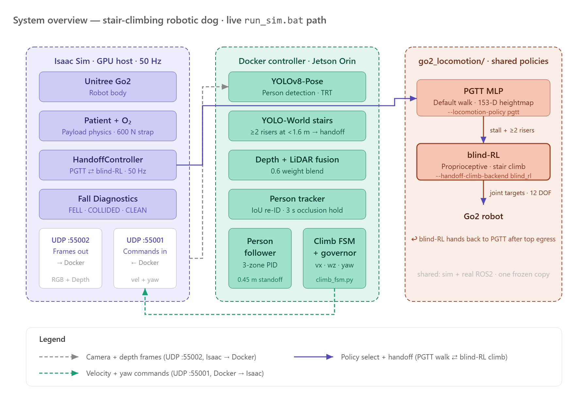
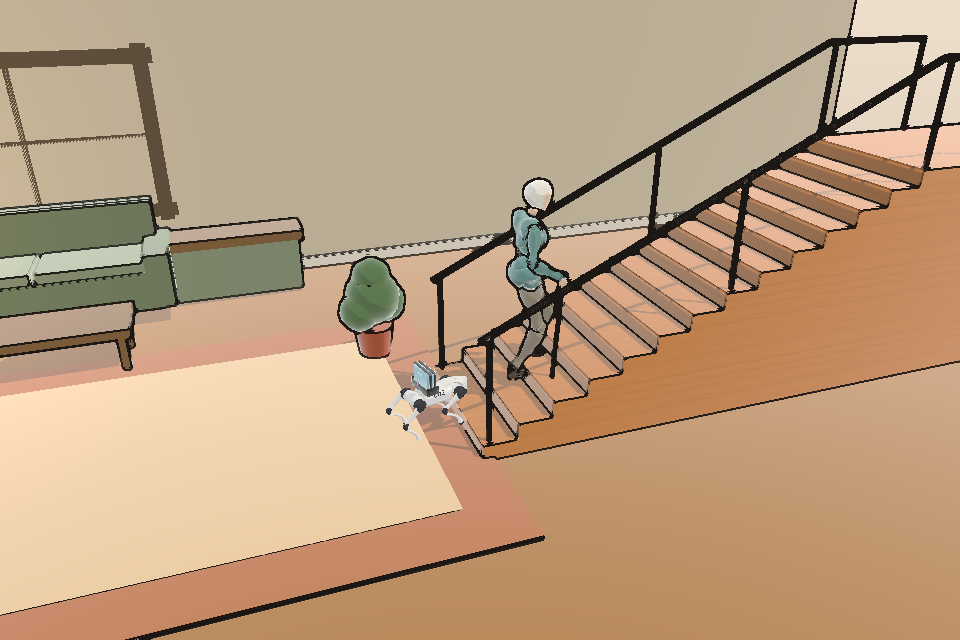
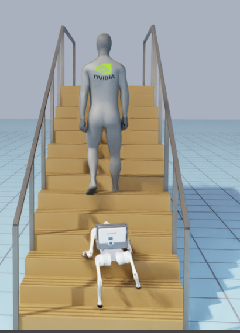
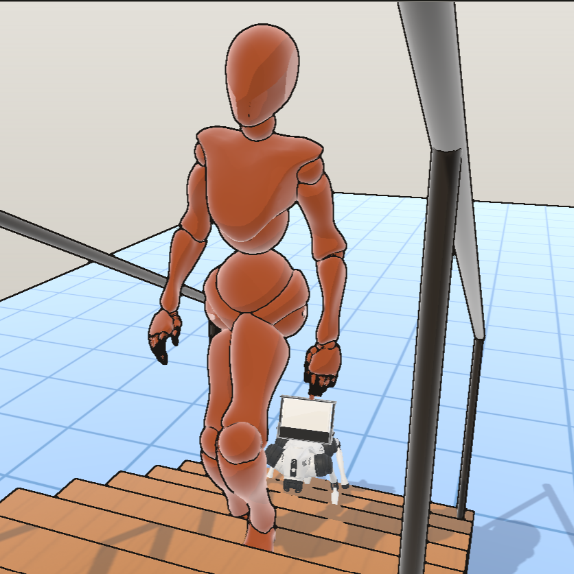

Stair-Climbing Robotic Dog for Oxygen Therapy Patients
USF College of Engineering • Team Robodog (Project #6)
Motivation
Patients on long-term oxygen therapy must haul a portable concentrator everywhere — and stairs are the highest fall-risk, highest-exertion obstacle in the home.
- A patient needs a free hand for the railing, yet must also manage the tank — usually while short of breath.
- Older, cautious stair-users climb slowly and step-to-step, with measurably higher stride variability and fall risk (Startzell 2000; Hausdorff 1997).
- Our companion robot carries the ~2.2 kg concentrator on its back, follows autonomously, recognizes the stairs, and climbs them itself — beside the patient.
Hardware

Hardware bring-up: a physical Unitree Go2 with the oxygen-payload cradle. Sim-to-real deployment is in progress — on-hardware stair climbing is not yet validated.
- Unitree Go2 quadruped (~6.9 kg), 12-DOF legs
- NVIDIA Jetson Orin onboard compute
- Intel RealSense D435 RGB-D + LiDAR (Hesai XT16 / Livox Mid-360)
- Oxygen payload: ~2.22 kg mock concentrator + rail cradle (~32% of trunk mass)
System Architecture

One shared codebase runs in NVIDIA Isaac Sim and on the real Go2 — only the sensor source is swapped. Perception + control (Jetson/Docker) emit velocity commands; a shared policy library returns 12-DOF joint targets.
Results and Discussions



Training Progress
Blind-RL retrain — 6,000 iterations, Go2 + 2.22 kg tank. Mean reward ~ 95.7, terrain curriculum plateaued at 138 mm riser.
Approach: Perceive → Follow → Detect → Hand off → Climb
- Perceive — RealSense D435 RGB-D + LiDAR feed two vision heads (person pose + open-vocabulary stairs).
- Follow — ByteTrack single-person lock (3 s occlusion hold) → 3-zone PID holds a 0.45 m standoff; depth-reactive avoidance routes around furniture.
- Detect stairs — YOLO-World counts risers; a geometric depth detector corroborates. ≥2 risers within 1.6 m triggers the climb (dual-evidence gate fixes an earlier false-positive on the patient's own body).
- Hand off — a 50 Hz HandoffController (WALK ↔ CLIMB ↔ TOP-EGRESS ↔ ABORT) swaps the walker for a climb policy on a motion-stall + riser trigger.
- Climb — a proprioceptive 'blind' RL policy drives the legs up; at the crest the robot walks clear and hands back to the walker.
Results — Isaac Sim
Stair-height sweep (full stack: walk + blind-RL climb + YOLO follow + O2 payload).
4 / 6 full climbs. The robot tops out on 0.12–0.15 m risers — including 0.15 m, the ADA-maximum real target stair — staying upright the whole time (peak tilt ≤ 31°, far below the 60° fall threshold).
- The strict grader flags these 'COLLIDED' = climbed nose-down / belly-dragging, not a clean gait (see Limitations). 0.175 m and 0.198 m risers were not reached.
Conclusions & Limitations
- Nose-down gait — the blind-RL climber climbs pitched down and belly-drags; verified to be a gait-posture problem, NOT a follow-distance, lost-person, or command/handoff bug.
- High Center of Gravity — as noted by Dr. Kearns, the oxygen carrier raises the robot's center of gravity. We are exploring a wider leg placement (stance width) for improved stability.
- Safety grade-gate not yet clean — on the incline, stance-locking is suppressed (locking mid-step topples the dog) and the frozen policy creeps forward at zero command, defeating a 0.55 m patient-clearance floor (min gap 0.209 m observed). A genuine clearance-vs-topple trade-off, not a quick patch.
- Real-hardware climb unproven — implemented with fail-safes (abort-to-walk on tilt, watchdog damping) but not yet validated on the physical Go2.
- An end-to-end follow→detect→hand-off→climb autonomy stack, built and validated in NVIDIA Isaac Sim on a shared sim/real codebase (401 passing host-side tests).
- Reaches the top landing of the real 0.15 m staircase end-to-end in the best recorded demo; clean-gait climbing and hardware validation are the active next steps.
References: PGTT (arXiv:2510.18348) · robot_lab / IsaacLab · NVIDIA Isaac Sim · YOLO-World · ByteTrack · OSNet · Unitree Go2 · RealSense D435 · Startzell 2000 · Hausdorff 1997
Anthony Sinchi · USF College of Engineering